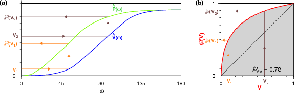
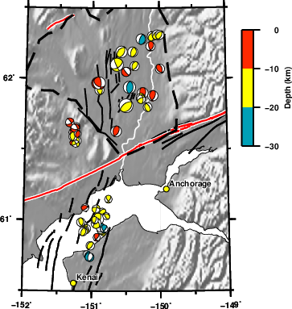
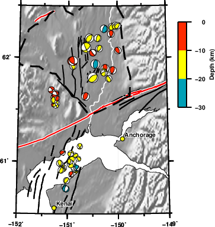

Broadly speaking, my research interests can be classified into two subcategories: (1) Earthquake source and (2) the Structure. Both of these go hand-in-hand, where understanding of one is impossible without the knowledge of the other.
Moment tensor inversions
Earthquakes in general occur on a fault by shear dislocation, which can be modeled as a double couple moment tensor. A double couple moment tensor is a 3 × 3 symmetric matrix whose eigenvalues are (λ, 0, −λ). We are concerned with estimating the magnitude and orientation (strike, dip, rake) of the moment tensor. Alternative terms for double couple moment tensors are ‘fault-plane solution’ or ‘focal mechanism.’ Our approach to moment tensor estimation can also be applied to ‘full’ moment tensors, which contain an additional two parameters (Alvizuri & Tape (2016)).
We perform moment tensor inversion using the ‘cut-and-paste’ (CAP) method of Zhu & Helmberger (1996). The best moment tensor is obtained by minimizing the difference between the data with the synthetics. The synthetics are computed for all possible moment tensors using a 1D reference structural model. Different bandpass filters are applied to the body waves and surface waves when comparing the data with the synthetics.


(left)
Waveform fits between data (black) and synthetics (red)
for an event in Anchorage (2009-04-07). The 'x' marked on
the beachball are the theoretical piercing points of the
emerging ray path to the stations.
(right)
Best depth estimate [centroid depth]. The inverted red
triangle is the best depth estimated by Alaska Earthquake
Center (AEC) using P-arrival times [hypocenter depth].
References:
Silwal, V. and C. Tape, 2016, Seismic moment tensors and estimated uncertainties in southern Alaska, Journal of Geophysical Research: Solid Earth, 121, 2772–2797, doi:10.1002/2015JB012588
Silwal, V., C. Tape, and A. Lomax, Crustal earthquakes in the Cook Inlet and Susitna region of southern Alaska (submitted to Tectonophysics).
References:
Silwal, V. and C. Tape, 2016, Seismic moment tensors and estimated uncertainties in southern Alaska, Journal of Geophysical Research: Solid Earth, 121, 2772–2797, doi:10.1002/2015JB012588
Silwal, V., C. Tape, and A. Lomax, Crustal earthquakes in the Cook Inlet and Susitna region of southern Alaska (submitted to Tectonophysics).
The confidence in moment tensor is quantified by comparing the normalized distribution of posterior samples, P(ω), with the normalized distribution of all samples, V(ω), where ω is a angle between two moment tensors.
Construction of the confidence curve P(V) for a moment tensor M0.

Moment tensor catalog of Alaska (left)
The fractional volume and probability curves V(ω) and
P(ω). The value P(V) is defined in terms of V(ω) and P(ω)
by requiring that P(V) = P(ω) when V(ω) = V , as indicated
by the arrows. The theoretical description is discussed in
detail in Tape & Tape, 2016.
(right) The confidence curve P(V). The orange and brown trajectories correspond to those in the left figure. The area under the curve is our confidence parameter PAV . The 45∘ line (dashed) would be P(V) if the probability had been homogeneous.
(right) The confidence curve P(V). The orange and brown trajectories correspond to those in the left figure. The area under the curve is our confidence parameter PAV . The 45∘ line (dashed) would be P(V) if the probability had been homogeneous.
References:
Silwal, V. and C. Tape, 2016, Seismic moment tensors and estimated uncertainties in southern Alaska, Journal of Geophysical Research: Solid Earth, 121, 2772–2797, doi:10.1002/2015JB012588
Alvizuri, C., V. Silwal, L. Krischer, and C. Tape, 2018, Estimation of full moment tensors, including uncertainties, for nuclear explorsions, volcanic events, and earthquakes. Journal of Geophysical Research: Solid Earth, doi: 10.1029/2017jb015325
Silwal, V. and C. Tape, 2016, Seismic moment tensors and estimated uncertainties in southern Alaska, Journal of Geophysical Research: Solid Earth, 121, 2772–2797, doi:10.1002/2015JB012588
Alvizuri, C., V. Silwal, L. Krischer, and C. Tape, 2018, Estimation of full moment tensors, including uncertainties, for nuclear explorsions, volcanic events, and earthquakes. Journal of Geophysical Research: Solid Earth, doi: 10.1029/2017jb015325
For performing a earthquake based tomographic inversion it is important to have reliable source mechanisms. We prepare a moment tensor catalog of >250 events (2007-2017) that are distributed in Alaska.
Undergraduate researchers Qingping Yu and Joshua Purba also contributed to this.

References:
Vipul Silwal, 2018, Seismic moment tensors for six events in Minto Flats fault zone, 2012-2016
Vipul Silwal, 2018, Seismic moment tensor catalog for crustal events in southern Alaska
Vipul Silwal, 2015, Seismic moment tensor catalog for southern Alaska
Vipul Silwal, 2015, Seismic moment tensor catalog for Minto Flats fault zone (2000-2014)
Hidden faults
Distribution of similar mechanism faulting for earthquakes in a seismic zone can be used as a strong evidence for the presence of a fault(s). This is specially useful when faults are sub-surface or overlain by a layer of sediment as in a basin environment and there is no surface feature.
These studies are generally supplemented with earthquake relocation, gravity and magnetic measurements, and revisit historical catalogs to get a better perspective on tectonics at regional scale.
 
(right) Consistent thrust faulting mechanism for small-to-intermediate magnitude earthquakes around Cook Inlet and Susitna basin, Alaska.
References:
Tape, C., V. Silwal, C. Ji, L. Keyson, M. E. West, and N. Ruppert, 2015, Transtensional Tectonics of the Minto Flats Fault Zone and Nenana Basin, Central Alaska, Bulletin of the Seismological Society of America, Vol. 105, No. 4, pp. 2081–2100, August 2015, doi: 10.1785/0120150055
Silwal, V., C. Tape, and A. Lomax, Crustal earthquakes in the Cook Inlet and Susitna region of southern Alaska (submitted to Tectonophysics).
3D simulations
3D velocity model of southern Alaska (modified from Eberhart-Phillips et. al. 2006) with velocity model of Cook Inlet basin (Shellenbaum et. al. 2010) embedded in it.


Synthetic waveforms filtered between 6-50s computed with (blue) and without (red) embedding the Cook Inlet basin.

References:
Silwal, V., C. Tape, and E. Casarotti, Wavefield Simulation of earthquakes in southern Alaska for tomographic inversion, AGU Fall Meeting 11-15 Dec. 2017, New Orleans
Seismic wavefield simulations within a three-dimensional seismic velocity model for Alaska (in prep)